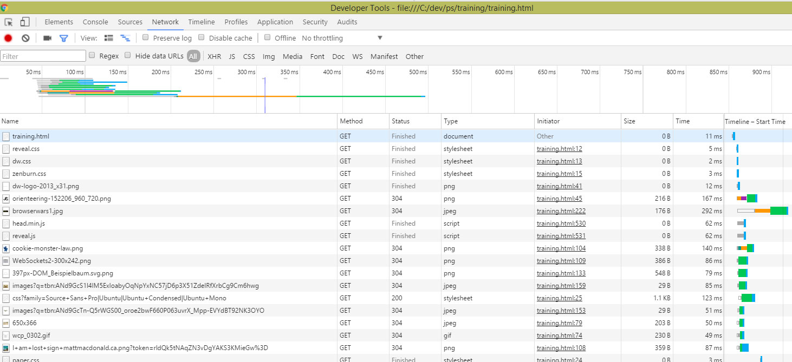

HTML 5 / CSS 3
Orientierungslauf
Sprint 1, Tag 1
Challenge:
"Wir bauen eine Web-App, die die Profile der Wahlkreis-Kandidaten zur Berliner Abgeordnetenhauswahl auflistet und anzeigt."
auf dem Weg dahin:
- (Fundamente) Web-Technologien
- (Struktur) HTML
- (Styling) CSS
- (Entwicklung) Web-Apps
HTTP - Hypertext Transfer Protocol
Request -> Response -> Request -> Response -> ...
Grundablauf:

Bildquelle: "Web Client Programming with Perl"
HTTP - Hypertext Transfer Protocol
..ist ein zustandsloses Protokoll.
-> Informationen aus früheren Anforderungen gehen verloren.

Bildquelle: Wikipedia
HTTP - Hypertext Transfer Protocol
..dient zur Übertragung von Inhalten im Web zwischen Browser und Server
..ist unverschlüsselt:

Bildquelle: Wikipedia
..die verschlüsselte Variante (HTTPS) basiert auf der Nutzung von server-seitigen Zertifikaten
HTTP - Hypertext Transfer Protocol
Methoden:
GET, POST (HEAD, PUT, DELETE, u.a.)
- (wichtige) Statuscodes sind:
- 2xx - erfolgreich
- 3xx - Umleitung (permanent, temporär, oft wichtig für SEO)
- 4xx - Client-Fehler (z.B. 404 nicht gefunden oder 403 nicht erlaubt)
- 5xx - Server-Fehler (interner Serverfehler)
HTTP - Hypertext Transfer Protocol
Wie identifizieren Anwendungen,
welcher Benutzer z.B. gerade ein Produkt in einen Warenkorb gelegt hat?
Wenn das Protokoll zustandslos ist?
Ganz ohne state - kein Staat zu machen
..zumindest bei serverseitigen Anwendungen
HTTP - Hypertext Transfer Protocol
Session-State lässt sich im Server erzeugen mit:
Session-Ids
(Parameter in der vom Browser aufgerufenen Url)
Cookies
(Informationsfragmente im Browser die automatisch zum Server mitgeschickt werden)

Bildquelle: Flickr
HTTP - Hypertext Transfer Protocol
Wie ist das bei SPAs oder mit REST-APIs?
header mit Tokens
Und es gibt (mittlerweile) auch permanente Verbindungen:
Websockets
DOM - Document Object Model
Die Elemente einer im Browser geladenen HTML-Seite
werden über eine definierte
Schnittstelle im Browser verfügbar gemacht:
|

Bildquelle: Wikipedia |
DOM - Document Object Model
Es gibt unterschiedliche Typen von Nodes (Knoten) im DOM:
Dokument, Dokumentfragment, Element, Attribut, Text
Diese stehen untereinandern in Beziehungen:
root > parent > children
Eine Besonderheit:
Attribute sind
Eigenschaften
- aber keine children von Elementen
DOM - Document Object Model
Warum ist das alles so wichtig?
1: Die Darstellung im Browser basiert darauf
2: Die Struktur der Elementbaums ist gleichzeitig das Fundament für die Modifikation des Erscheinungsbildes per CSS
3: Neue (und alte) Javascript-Bibliotheken und Frameworks arbeiten massiv auf Basis der
Manipulation des DOMs
z.B.
Alte Dinosaurier: jquery Bildquelle: Wikipedia |
Junge Platzhirsche: angular.js Bildquelle: Wikipedia |
Der Webbrowser
Es war einmal vor gar nicht so langer Zeit...

Jeder Hersteller wollte etwas besonders gut können. Jede Version konnte etwas neues. Die Nutzer hatten verschiedene Browser in verschiedenen Versionen auf verschiedenen Systemen...
Anzahl Browser x Anzahl genutzte Versionen
x Geräteklassen (Smartphones, Tablets, Autos...)
Der Webbrowser
Was kann man tun?:
Auf den Browser eingehen:
https://modernizr.com
Ihm mehr beibringen:
Polyfills
Und: "Eine neue Hoffnung!"
Evergreen-Browser
Der Webbrowser
Haben wir heute die dunkle Seite besiegt?
Aber es gibt bessere Lichtschwerter:

Challenge:
"Wir bauen eine Web-App, die die Profile der Wahlkreis-Kandidaten zur Berliner Abgeordnetenhauswahl auflistet und anzeigt."
- (Fundamente) Web-Technologien ✔
- (Struktur) HTML (gleich)
- (Styling) CSS (später)
- (Entwicklung) Web-Apps (später)
HTML - Grundgerüst von HTML-Dateien
Doctype
..wurde vor HTML5 benutzt, um externe Dokument-Typ-Definitionen einzubinden (XHTML)
<!DOCTYPE HTML PUBLIC "-//W3C//DTD HTML 4.01//EN" "http://www.w3.org/TR/html4/strict.dtd">
Heute verwendet man (meist) nur noch HTML5:
<!DOCTYPE html>HTML - Grundgerüst von HTML-Dateien
Sehen Sie sich den Quellcode dieser Seite an.
Basiselemente einer Seitenstruktur:
<html lang="de">
<head>